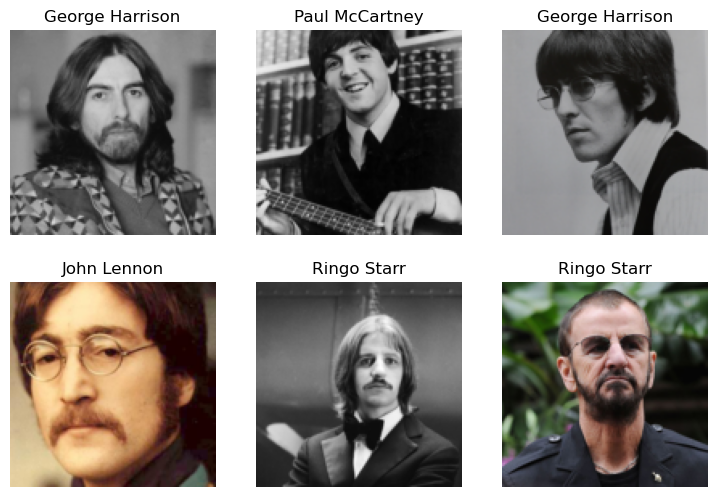
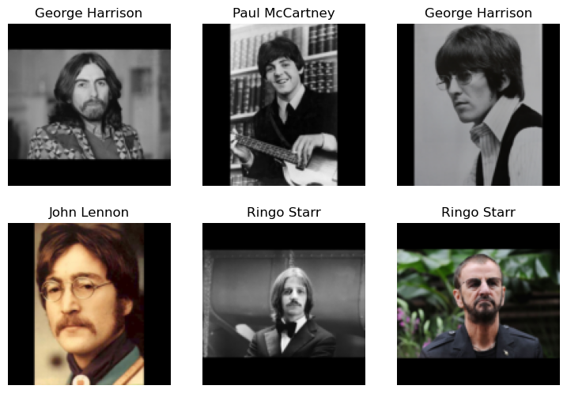
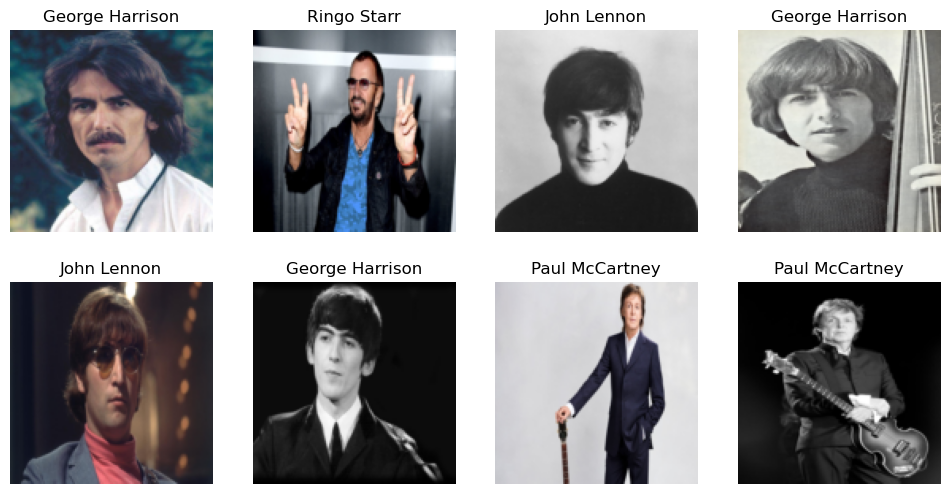
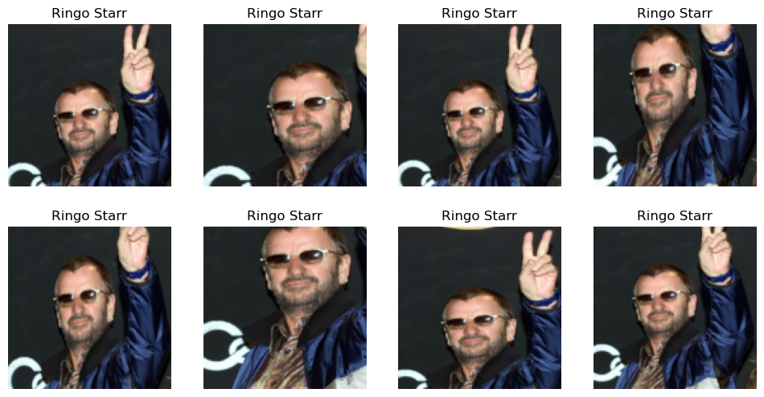
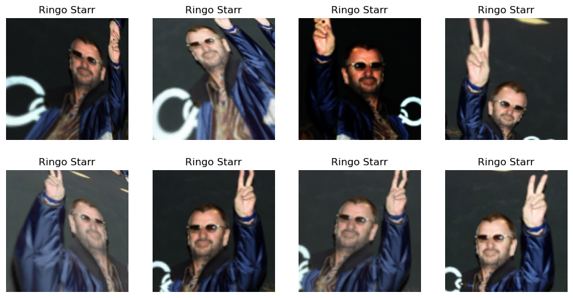
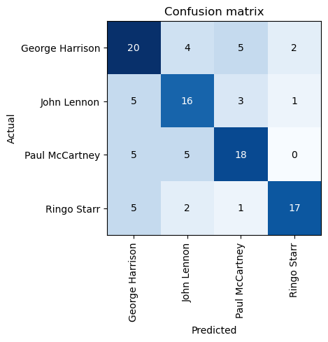
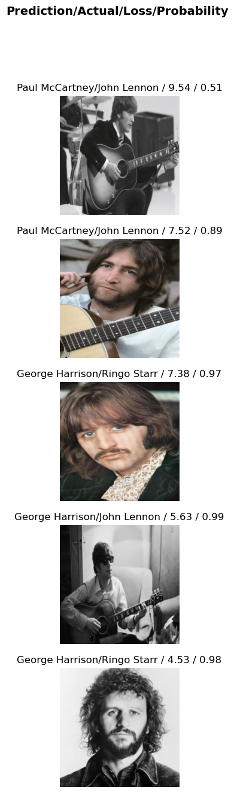

from duckduckgo_search import ddg_images
def search_images(term, max_images=30):
print(f"Searching for '{term}'")
return L(ddg_images(term, max_results=max_images)).itemgot('image')Step 1: Download images of the Beatles using DuckDuckGo
::: {#589f3b17 .cell _cell_guid=‘b1076dfc-b9ad-4769-8c92-a6c4dae69d19’ _uuid=‘8f2839f25d086af736a60e9eeb907d3b93b6e0e5’ execution=‘{“iopub.execute_input”:“2023-03-09T22:02:42.432683Z”,“iopub.status.busy”:“2023-03-09T22:02:42.432353Z”,“iopub.status.idle”:“2023-03-09T22:02:57.541452Z”,“shell.execute_reply”:“2023-03-09T22:02:57.540385Z”}’ papermill=‘{“duration”:15.121345,“end_time”:“2023-03-09T22:02:57.544044”,“exception”:false,“start_time”:“2023-03-09T22:02:42.422699”,“status”:“completed”}’ tags=‘[]’ execution_count=1}
import socket,warnings
try:
socket.setdefaulttimeout(1)
socket.socket(socket.AF_INET, socket.SOCK_STREAM).connect(('1.1.1.1', 53))
except socket.error as ex: raise Exception("STOP: No internet. Click '>|' in top right and set 'Internet' switch to on")
import os
iskaggle = os.environ.get('KAGGLE_KERNEL_RUN_TYPE', '')
if iskaggle:
!pip install -Uqq fastai duckduckgo_search
from fastai import *
from fastai.vision import *
from fastai.vision.all import *
from fastai.vision.widgets import *
from fastcore.all import *
from fastdownload import download_url:::
We save images in ‘searches’ to train the model. We remove images which didn’t download correctly.
searches = 'John Lennon', 'Paul McCartney', 'Ringo Starr', 'George Harrison'
path = Path('the_Beatles')
from time import sleep
for o in searches:
dest = (path/o)
dest.mkdir(exist_ok=True, parents=True)
download_images(dest, urls=search_images(f'{o}', 150))
sleep(10) # Pause between searches to avoid over-loading server
#resize_images(path/o, max_size=400, dest=path/o)
failed = verify_images(get_image_files(path))
failed.map(Path.unlink)
len(failed)Searching for 'John Lennon'
Searching for 'Paul McCartney'
Searching for 'Ringo Starr'
Searching for 'George Harrison'19Step 2: Augment the data
We use a ‘Datablock’ to separate the data into training and validation sets.
data = DataBlock(
blocks=(ImageBlock, CategoryBlock),
get_items=get_image_files,
splitter=RandomSplitter(valid_pct=0.2, seed=42),
get_y=parent_label,
item_tfms=Resize(128))
dls = data.dataloaders(path)
dls.valid.show_batch(max_n=6, nrows=2)
Pad the images with black:
data=data.new(item_tfms=Resize(128, ResizeMethod.Pad, pad_mode='zeros'))
dls = data.dataloaders(path)
dls.valid.show_batch(max_n=6, nrows=2)
Squish the images:
data.new(item_tfms=Resize(128, ResizeMethod.Squish))
dls = data.dataloaders(path)
dls.train.show_batch(max_n=8, nrows=2)
Transform with Random Resized Crop:
data.new(item_tfms=RandomResizedCrop(128, min_scale=0.3))
dls = data.dataloaders(path)
dls.train.show_batch(max_n=8, nrows=2, unique=True)
Example of data augmentation using aug_transforms:
data = data.new(item_tfms=Resize(128), batch_tfms=aug_transforms(mult=2))
dls = data.dataloaders(path)
dls.train.show_batch(max_n=8, nrows=2, unique=True)
Step 3: Train the model and clean some of the data by hand
data = data.new(
item_tfms=RandomResizedCrop(224, min_scale=0.5),
batch_tfms=aug_transforms())
dls = data.dataloaders(path)learn = vision_learner(dls, resnet18, metrics=error_rate)
learn.fine_tune(4)/opt/conda/lib/python3.7/site-packages/torchvision/models/_utils.py:209: UserWarning: The parameter 'pretrained' is deprecated since 0.13 and may be removed in the future, please use 'weights' instead.
f"The parameter '{pretrained_param}' is deprecated since 0.13 and may be removed in the future, "
/opt/conda/lib/python3.7/site-packages/torchvision/models/_utils.py:223: UserWarning: Arguments other than a weight enum or `None` for 'weights' are deprecated since 0.13 and may be removed in the future. The current behavior is equivalent to passing `weights=ResNet18_Weights.IMAGENET1K_V1`. You can also use `weights=ResNet18_Weights.DEFAULT` to get the most up-to-date weights.
warnings.warn(msg)
Downloading: "https://download.pytorch.org/models/resnet18-f37072fd.pth" to /root/.cache/torch/hub/checkpoints/resnet18-f37072fd.pth| epoch | train_loss | valid_loss | error_rate | time |
|---|---|---|---|---|
| 0 | 2.396378 | 1.538527 | 0.522936 | 00:24 |
| epoch | train_loss | valid_loss | error_rate | time |
|---|---|---|---|---|
| 0 | 1.393517 | 1.140603 | 0.440367 | 00:22 |
| 1 | 1.261823 | 0.996967 | 0.357798 | 00:23 |
| 2 | 1.069076 | 0.967244 | 0.339450 | 00:23 |
| 3 | 0.934776 | 0.965879 | 0.348624 | 00:23 |
To visualize the mistakes the errors the model makes, we create a confusion matrix.
interp = ClassificationInterpretation.from_learner(learn)
interp.plot_confusion_matrix()
interp.plot_top_losses(5, nrows=5)
Step 3: Turn the model into an online application
We save the architecure and the learned parameters of our model.
learn.export()path = Path()
path.ls(file_exts='.pkl')(#1) [Path('export.pkl')]We can then create an inference learner from this exported file.
learn_inf = load_learner(path/'export.pkl')